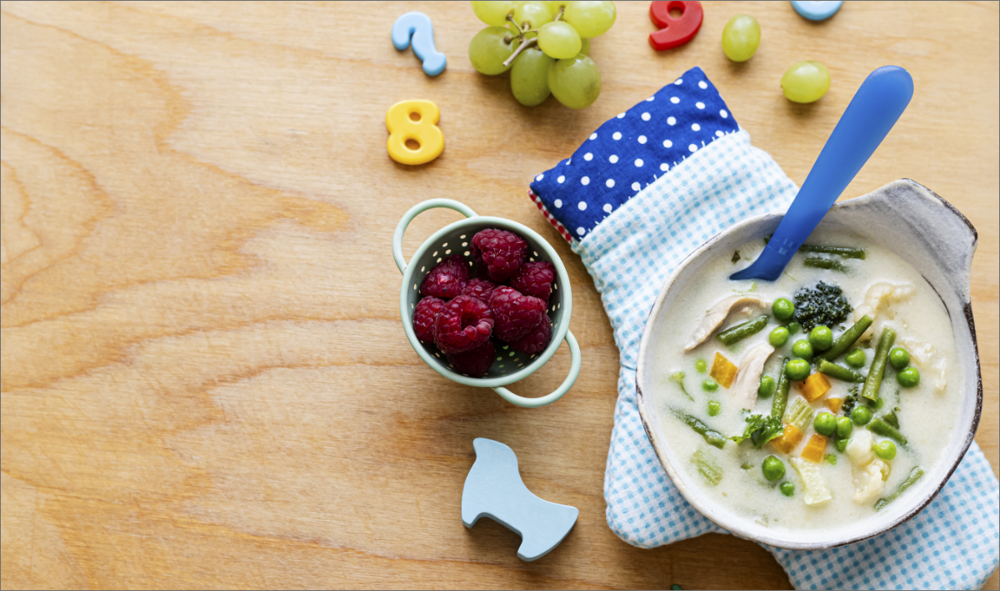
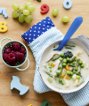
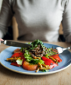

CATEGORÍAS
-
TIPS PARA CULTIVAR ALIMENTOSEN CASA
Mayo 22,2022
-

NIÑOS Y VERDURAS
Junio 24,2022
-

ALIMENTOS NO APTOS
Enero 02,2022
RECETAS
NIÑOS Y VERDURAS
OCTUBRE 01,2022
Cocinar con los niños tiene múltiples beneficios para su desarrollo y es una gran fuente de aprendizaje. Es bueno meter a los niños en la cocina desde pequeños, pues cocinar juntos no solo es una actividad que nos permite pasar tiempo y fortalecer lazos, sino que les preparara para la vida práctica y fomenta su autonomía.
- Organico,Alimentos Organicos,Vida Organica,Huerta
 Compartir en
Compartir en